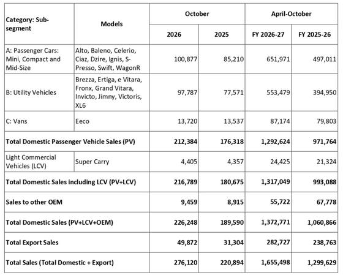
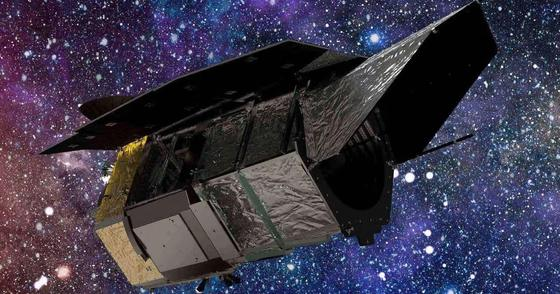
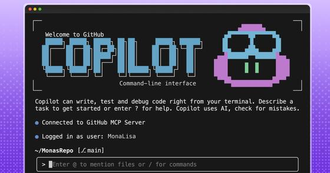
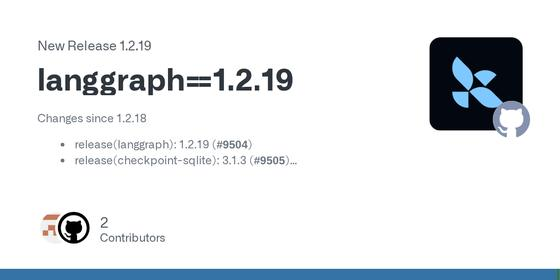
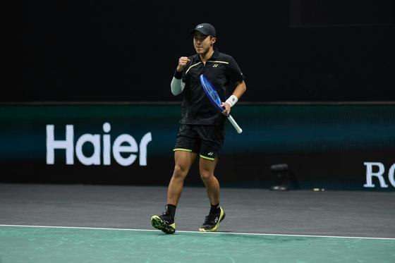
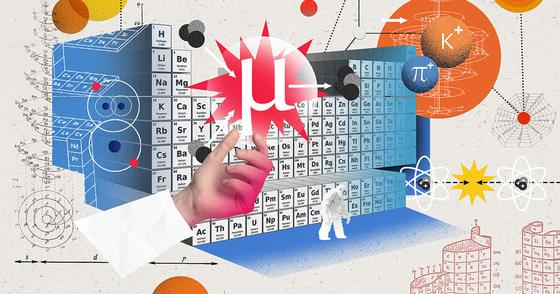
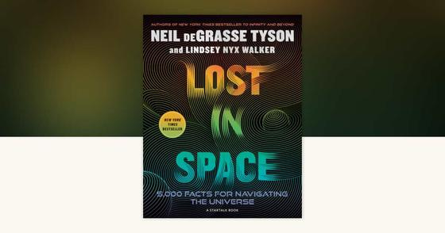

📍 San Jose: 67° / 46°F, Overcast
⏱ ~55 min reading
92 items
|
The Morning Brief
Executive Personal Intelligence Briefing
|
Monday, November 2, 2026
Sunrise 06:33 · Sunset 17:08 · AQI 48 · Moon: Last quarter, 48% lit
|
|
Executive Synthesis: Agent papers ask where failures sit—in the model or the harness—and vLLM ships a fresh release. NASA is considering Hubble servicing, Maruti reports October sales, and Prime Video’s November slate brings new viewing dates.
Don't Miss
 When Agents Fail: Model or Harness--Who's to Blame?
When Agents Fail: Model or Harness--Who's to Blame?
—
This study argues that agent performance belongs to a model–harness pairing, then separates valid completion, model–harness fit, cross-model fit, interaction effects, and token load. It evaluates four general-purpose harnesses with four models across six benchmarks; 111 settings produce 52,168 trajectories. The authors find that rankings can change by model and benchmark, and that task score may diverge from whether a run completes in an evaluable form. The study covers selected public systems and benchmarks, so it supports interaction-aware comparisons rather than a universal harness ranking.
Takeaway: This supports your production-agent harness work by separating execution completion from answer correctness and model–runtime fit.
vLLM v0.33.0 adds model support and drops CUDA 12.9 artifacts
—
The vLLM maintainers released v0.33.0 on November 2, reporting 927 commits from 389 contributors, including 122 new contributors. The update adds support for models such as Reflection Beam-1.0 and Recursive Flint, upgrades to PyTorch 2.14, and drops CUDA 12.9 wheels and images in favor of CUDA 13.0 artifacts. The notes also cite hardware-specific speculative-decoding gains; those are project-reported PR benchmarks, not one general performance comparison.
Takeaway: For agent runtime and serving work, check the CUDA 13.0 compatibility change and the new model support before adopting this vLLM release.
 NASA asks industry about possible commercial Hubble servicing
NASA asks industry about possible commercial Hubble servicing
—
NASA issued a Request for Information on Oct. 29 to learn whether commercial providers could boost Hubble’s orbit, service or upgrade the telescope, or safely dispose of it at mission end. NASA says Hubble may re-enter in 2033–2034 and that any servicing mission would need to take place by 2032; responses to the request are due Nov. 30. This is an exploration of industry capabilities, not a selected contractor or approved mission, while the agency develops a future flagship telescope.
Takeaway: It adds a measured mission-planning angle to your astronomy interests: a possible life extension is being scoped against orbital decay and a 2032 deadline.

Maruti Suzuki records its highest-ever monthly sales in October
—
Maruti Suzuki said it sold 276,120 units in October 2026, its highest monthly total to date. Domestic sales also reached a record, at 216,789 units; sales to other original-equipment manufacturers were 9,459 and exports were 49,872. The company release attributes the figures to its own sales tally and separates domestic sales, other-OEM sales and exports. It is one company’s dispatch data, rather than a full industry measure, but adds a primary-source datapoint to the month’s vehicle-sales reports.
Takeaway: This primary company release adds a dated auto-sector datapoint to the India markets section you follow.
Ignacio Buse becomes the first Peruvian to win at the Paris Masters
—
Ignacio Buse beat Zizou Bergs 6–2, 6–4 on Monday to become the first Peruvian to win a match at the Paris Masters. Tennis Majors reports that Buse converted four of 10 break points, while Bergs made 29 unforced errors. The result sets Buse against fourth seed Daniil Medvedev in round two. See the tournament’s [official draw](https://www.rolexparismasters.com/en/draws) and [day-by-day schedule](https://www.rolexparismasters.com/en/news/article/2026-edition-complete-schedule-qualifying-main-draw-singles-doubles-wheelchair-tennis) for the next matches.
Takeaway: A notable new result from the Paris Masters, alongside the tournament’s current draw and schedule.
Prime Video sets Muhammad Ali series ‘The Greatest’ for November 4
—
Prime Video’s U.S. November slate schedules The Greatest for November 4 and describes it as the first authorized scripted series about Muhammad Ali’s life. The official listing places it among the month’s new Prime Originals. This is a confirmed streaming-series date rather than a review, so the source establishes availability and format but makes no claim about the finished show’s quality.
Takeaway: For the series-and-film titles you follow, this adds a confirmed Prime Video date for a biographical drama.
Only one follow-up survived source verification: the re-entry forecast moved to November 3–5. Two other candidate updates could not be confirmed at their linked source pages, so this row is short.

Swift re-entry forecasts move to 3–5 November
—
After the earlier covered item “NASA's Swift observatory ends science operations and is expected to re-enter around 2 November,” WRAL reports a later forecast window. Aerospace Corporation estimates re-entry from 2:30 a.m. Eastern on November 3 to 4:30 a.m. Eastern on November 5; NASA's SWORDEC forecast gives a 24-hour window beginning at 12:18 a.m. Eastern on November 3. The estimates may move as the orbit decays, and the location remains uncertain until late in the descent.
Takeaway: This is a new timing update on a space-mission ending you were already following.
Public release notes cover Copilot CLI, Android Studio and vLLM; enterprise moves include RELEX, Home Depot and Abu Dhabi. One code-scanning workflow survives in security, while the video item did not pass source verification.

GitHub Copilot CLI 1.0.106-2 smooths MCP and session handling
—
GitHub Copilot CLI’s 1.0.106-2 prerelease tightens several interaction edges: screen-reader output now labels tool failures and warnings, /resume foregrounds an existing background session, and a hung HTTP MCP server consumes one startup timeout instead of three. It also preserves symlinked MCP configuration and synchronizes added, removed, or refreshed skills into sessions. This is a maintenance release rather than a capability jump, but its MCP startup and session fixes are directly relevant to everyday agent tooling.
Takeaway: For your AI coding and MCP-tool interests, the release touches both setup reliability and session handling.
Android Studio Rabbit 2 opens to 40-plus coding agents
—
Google says Android Studio Rabbit 2 is stable and lets developers choose Claude Agent, Codex, Antigravity, or more than 40 ACP-compliant coding agents from inside the IDE. Android CLI also gains remote streaming to real devices through Firebase and Jetpack Compose previews, so an agent can inspect UI output without launching an emulator or installing an APK. The changes widen tool choice inside Android workflows; the announcement gives no comparative quality or task-success results.
Takeaway: For your AI coding and agent-tools interest, Google is bringing familiar coding agents into an Android-native workflow.
Abu Dhabi announces four OpenAI agreements, including a live government pilot
—
Abu Dhabi Media Office said local entities and OpenAI signed four agreements across government, energy and investment. The package includes ADNOC deployment of OpenAI GPT models using UAE in-country inference, plus a machine-readable government initiative that converts selected rules into inputs for routine compliance assessments. Its first pilot is already in production at the Abu Dhabi Agriculture and Food Safety Authority for food imports. The announcement says each assessment is traceable to a rule and officials retain final oversight; it provides no measured outcomes yet.
Takeaway: Your enterprise-agent interests may benefit from this deployment pattern: structured rules, traceable assessments and human decision oversight.
 RELEX expands its agentic platform across retail operations
RELEX expands its agentic platform across retail operations
—
RELEX announced new RELEX Open capabilities for connecting systems, extending its applications and orchestrating AI-driven workflows across supply-chain planning, merchandising and operations. The company says its agents can factor in priorities and constraints elsewhere in a retailer’s business, aiming to coordinate decisions rather than optimize each function separately. The announcement positions MCP, APIs and plugins as ways to connect software and business knowledge. It describes the product direction but supplies no independently measured customer results.
Takeaway: Your enterprise-agent interest makes the MCP and API orchestration approach worth tracking across retail operations.
Copilot will retire three models on November 16
—
GitHub plans to retire Claude Opus 4.8, Claude Opus 5 and GPT-5.6 Terra across Copilot Chat, inline edits, ask and agent modes, and completions on November 16. It recommends Claude Opus 5.5 for the Opus models and GPT-6.1 Sol or GPT-6 Luna for Terra. Suggested alternatives are enabled by default for Business and Enterprise unless an administrator changes global or model policies. Claude Opus 4.8 remains available to individual annual subscribers. Review any saved model defaults before the date.
Takeaway: For the GitHub Copilot tools you follow, this gives a firm date to check model availability and defaults before November 16.
 GPT-6 Rosalind Research targets approved life-sciences workflows
GPT-6 Rosalind Research targets approved life-sciences workflows
—
OpenAI’s October 30 release notes describe GPT-6 Rosalind Research as bringing GPT-6 reasoning to multistep life-sciences research with safeguards for biological work. Access is limited to approved research customers in Work, Codex and the API; it is not available in Chat. Enterprise workspaces begin with a two-week Admin Preview and the model is off by default. The update pairs a specialized research capability with trusted-access and administrator controls, so the key implementation detail for builders is the deployment gate as much as the model’s domain focus.
Takeaway: Your biology and AI-agent interests make its tool-heavy research workflows worth tracking, though access is restricted to approved research organizations.
Copilot app adds a local workflow for code-scanning alerts
—
GitHub’s new security extension for the Copilot app is in public preview. It lets developers browse code-scanning alerts, ask Copilot to explain or fix them in a local working copy, and run a security review on current changes. GitHub says the tool does not commit or push its fixes, leaving review and iteration with the developer. Existing alerts require code scanning to be enabled, and enterprise administrators can control plugin installation. This puts remediation beside coding while retaining a human review step.
Takeaway: Your interest in AI coding tools may make this local alert-review path useful to evaluate alongside agent permissions.

LangGraph 1.2.19 fixes streaming and paused-tool reporting
—
LangGraph 1.2.19 is a maintenance release focused on streaming correctness. It stops trace_policy from rewriting streamed node payloads, gives message and tool events the namespace of their graph, and fixes output messages from a graph streamed inside a node. The release also corrects paused tools being reported as failed, returns awaited task values while streaming, and adds ToolNode names to graph-node metadata. The notes concentrate on reliability in streamed and nested workflows rather than a new high-level capability.
Takeaway: Your agent-framework interests make these streaming and paused-tool edge cases useful to check if LangGraph is in your stack.
 MCP server release updates certificate dependencies
MCP server release updates certificate dependencies
—
The Model Context Protocol servers v2.2.0 release updates the fetch server’s Docker lock to certifi 2026.10.23 and documents trust-store dependencies after an intermediate-certificate disclosure. Its notes distinguish official TypeScript servers, which use Node’s certificate store, from mcp-server-fetch, which uses certifi through httpx. Maintainers say npm-installed TypeScript servers need Node 24.22.1 or 26.12.1 or later; the package engine range alone may not warn about an older runtime. The release makes runtime and certificate-bundle versions explicit deployment dependencies.
Takeaway: For your MCP and agent-deployment interests, the release maps which server behavior depends on Node and the CA bundle.
Production-agent papers test web search, harness attribution, verifier creation and judge behavior. The summaries keep benchmark results but remove popularity rankings and upvote counts that the source pages did not show.
Deep Search in Real-World Web Environments
—
OpenDS-World tests live-web research across 200 tasks with 12 frontier models under one tool protocol. The best-performing model reached 39.0% accuracy, while human evaluation across 1,000 independent attempts reached 21.1%. The authors also report persistent challenges in tool coordination and long-horizon search management. These are benchmark results, not evidence that the task suite captures every useful research task.
Takeaway: For your long-horizon agent and evaluation interests, this benchmark tests evidence gathering on the live web rather than static retrieval.
IQuest-Q1: Advancing Foundation Capabilities for Agentic CLI Systems
—
IQuest-Q1 is an open sparse mixture-of-experts foundation model for agentic coding, with 320B total parameters and 15B activated. The paper describes a three-stage training process and merging experts/checkpoints. The abstract reports coding and general-task capabilities but provides no benchmark scores, so its model size and training recipe do not establish a comparative capability advantage.
Takeaway: Your production-agent paper tracking includes agentic CLI systems; this is a widely surfaced model release to compare against harness-level results.
When Agents Fail: Model or Harness--Who's to Blame?
—
This study argues that agent performance belongs to a model–harness pairing, then separates valid completion, model–harness fit, cross-model fit, interaction effects, and token load. It evaluates four general-purpose harnesses with four models across six benchmarks; 111 settings produce 52,168 trajectories. The authors find that rankings can change by model and benchmark, and that task score may diverge from whether a run completes in an evaluable form. The study covers selected public systems and benchmarks, so it supports interaction-aware comparisons rather than a universal harness ranking.
Takeaway: This supports your production-agent harness work by separating execution completion from answer correctness and model–runtime fit.
Design and Cross-Domain Evaluation of an Agent Execution Harness
—
A planner, scoped workers, and a reviewer share an objective while keeping plan and execution record separate. The authors report 83 of 89 Terminal-Bench 2.1 instances passed (93.26%) and a length-adjusted HealthBench Professional score of 69.63 over 525 tasks. In a 53-task paired HealthBench comparison the aggregate score rose 19.89 points, while the median task changed by −1.46 points and mean inference cost rose from $0.29 to $2.13 per task. The instruction set was refined without official grading feedback, making the reported cross-domain gains an author-run result to verify independently.
Takeaway: Your harness and agent-evaluation interests make the cost and task-level spread as important as the headline pass rate.
VeriCUA: Verification as Agentic Exploration for Computer-Using Agents
—
VeriCUA treats task verification as evidence gathering: after building a rubric, the verifier chooses GUI or code checks for unresolved requirements and combines their findings under explicit evidence rules. It aims to work across online and offline settings, platforms, and observation modes, addressing the partial view of screenshot judges and state-inspection scripts. The authors report better agreement with reference labels across settings, largest gains on hard offline cases, and stronger rejection of false completion claims online. The abstract gives no effect sizes and labels the work in progress, so the size and stability of the gain need follow-up.
Takeaway: Your trace-evaluation and computer-use interests make this a useful design to compare with screenshot-only or state-only completion checks.
VerifierBench: Benchmarking the Generation of Executable Verifiers for LLM Agents
—
VerifierBench measures whether an agent can write a verifier that accepts every valid solution and rejects invalid ones. It includes 222 tasks from six benchmarks and 4,993 hidden tests, including alternative correct solutions and attacks; a six-check V4V audit screens the source tests and verifiers. Across 19 models, normalized balanced accuracy ranges from 10.6 to 62.1. Generated verifiers reject invalid outputs more reliably than they accept valid ones, often because they reject every tested solution. This makes valid-solution coverage a key audit dimension, though the benchmark’s task mix is still bounded.
Takeaway: This is relevant to your evaluation and guardrail interests because it treats verifier false rejection as a first-class reliability failure.
Maruti Suzuki records its highest-ever monthly sales in October
—
Maruti Suzuki said it sold 276,120 units in October 2026, its highest monthly total to date. Domestic sales also reached a record, at 216,789 units; sales to other original-equipment manufacturers were 9,459 and exports were 49,872. The company release attributes the figures to its own sales tally and separates domestic sales, other-OEM sales and exports. It is one company’s dispatch data, rather than a full industry measure, but adds a primary-source datapoint to the month’s vehicle-sales reports.
Takeaway: This primary company release adds a dated auto-sector datapoint to the India markets section you follow.
 Apple FY26 fourth-quarter results call — November 2 at 2 p.m. PT
Apple FY26 fourth-quarter results call — November 2 at 2 p.m. PT
—
Apple’s investor-relations page schedules its conference call to discuss FY26 fourth-quarter results and business updates for Monday, November 2, 2026, at 2:00 p.m. Pacific / 5:00 p.m. Eastern. The event is later today, after the regular US trading session. The official page is a calendar notice and contains no results yet, so the brief should treat earnings figures as pending until Apple releases them.
Takeaway: Apple is one of the widely followed US companies in your market brief, and the call is today after the close.
 EIA Weekly Petroleum Status Report — November 4 at 10:30 a.m. ET
EIA Weekly Petroleum Status Report — November 4 at 10:30 a.m. ET
—
The EIA schedules its Weekly Petroleum Status Report for the standard Wednesday release time of 10:30 a.m. Eastern. November 4 is the coming Wednesday; the schedule’s listed holiday exception shifts data for the week ending November 6 to Thursday November 12, leaving the November 4 report on the normal slot. The release includes weekly US petroleum supply and inventory data, making it a dated checkpoint for the oil-price moves now affecting markets.
Takeaway: It is a useful scheduled checkpoint for the energy and oil context in your US and India market coverage.
 US October CPI release — November 10 at 8:30 a.m. ET
US October CPI release — November 10 at 8:30 a.m. ET
—
The BLS November release calendar schedules the Consumer Price Index for October 2026 on Tuesday, November 10, at 8:30 a.m. Eastern. The same time slot includes October real-earnings data. The calendar provides the release date and time only; it contains no CPI result or forecast. This is the next major inflation update after the October Federal Reserve meeting and falls within the brief’s coming-week window.
Takeaway: You follow US inflation and rate-sensitive markets, so this date is a useful marker for next week.
Latest Radar
Apple Investor Relations:
U.S. Energy Information Administration:
Clinical Nutrition via PubMed:
Applied Physiology, Nutrition, and Metabolism via PubMed:
Model Context Protocol / GitHub:
arXiv / Hugging Face Daily Papers:
arXiv / Hugging Face Daily Papers:
NASA Jet Propulsion Laboratory:
Swiss Federal Department of Foreign Affairs:
Prime Minister’s Office, Government of India:
Fédération Internationale de l’Automobile (FIA):
Telugu Film Producers Council:
About Amazon / Prime Video:
Lufthansa Group Newsroom:
NASA asks industry about possible commercial Hubble servicing
—
NASA issued a Request for Information on Oct. 29 to learn whether commercial providers could boost Hubble’s orbit, service or upgrade the telescope, or safely dispose of it at mission end. NASA says Hubble may re-enter in 2033–2034 and that any servicing mission would need to take place by 2032; responses to the request are due Nov. 30. This is an exploration of industry capabilities, not a selected contractor or approved mission, while the agency develops a future flagship telescope.
Takeaway: It adds a measured mission-planning angle to your astronomy interests: a possible life extension is being scoped against orbital decay and a 2032 deadline.
 Voyager 1 saves power after a 48-hour communications pause
Voyager 1 saves power after a 48-hour communications pause
—
NASA’s Voyager team completed the “Big Bang” power-saving swap in early September, replacing three devices with lower-power alternatives so the probe can keep its remaining science instruments operating longer. The spacecraft then went silent during two scheduled Deep Space Network contacts on Oct. 18 and 19, while about 16 billion miles (24 billion kilometers) from Earth; its signal returned on Oct. 20. Engineers say one thruster group went offline and backups activated automatically, but the cause of the communications interruption is still under investigation.
Takeaway: Your space exploration interest gets a concrete example of how mission teams extend a spacecraft’s science life under power constraints.
 A Cretaceous dinosaur’s skull points to fruit eating
A Cretaceous dinosaur’s skull points to fruit eating
—
Stony Brook University researchers describe Infernogallus jamesi, a small oviraptorosaur whose skull and chewing-muscle arrangement resemble those of modern fruit-eating parrots. CT-based reconstruction suggests a back-and-forth bite suited to processing soft fruit and stone fruits; the researchers interpret this as specialized fruit eating. The nearly complete skull and partial skeleton come from the Hell Creek Formation. The dietary conclusion is inferred from anatomy, and the authors say the find raises a further question about whether such dinosaurs helped disperse seeds.
Takeaway: It connects dinosaur evolution with changing plant life and the anatomy behind an inferred diet.
 A DNA-folding mechanism may connect a family of cancer mutations
A DNA-folding mechanism may connect a family of cancer mutations
—
A Weill Cornell Medicine study reports that loss of BAF-complex function opens DNA loops at thousands of sites, increasing binding by the gene regulator CTCF. The team says this shared change helps explain how mutations in the BAF complex, found in about 20% of human cancers, can alter gene activity across different tumor types. In cell and animal models, deleting CTCF reversed the effect; patient data also supported its role. The proposed targets remain research directions, not established treatments.
Takeaway: Your biology interests include how genome structure and regulation shape cellular behavior.
 Two Different Things Are Killing Sharks
Two Different Things Are Killing Sharks
—
SciShow compares declining great-white sightings in South Africa with unexplained shark deaths in North American waters. It outlines possible pressures in South Africa, including orca predation, fishing and beach deterrence, while describing brain inflammation in North American cases as unresolved. The useful takeaway is that similar population declines can have different local causes, and the evidence is not settled.
Takeaway: It brings a current biology question into your science watch list and shows where researchers still lack a causal answer.
 How To Hold Something That's 10,000,000 Degrees
How To Hold Something That's 10,000,000 Degrees
—
Hank Green’s SciShow survey explains how scientists contain materials that can react with their container, are extremely small, or are too energetic to touch. Examples include storing alkali metals under mineral oil or argon, passivating fluorine containers, and trapping ions with fields. It connects these techniques to uses such as quantum computing and power generation, showing how practical containment enables experiments.
Takeaway: This accessible physics explainer ties experimental constraints to measurable evidence, echoing the measurement angle in your cosmology reading.
 Switzerland reopens its diplomatic office in Pyongyang
Switzerland reopens its diplomatic office in Pyongyang
—
Swiss foreign minister Ignazio Cassis concluded a visit to both Koreas on 31 October, officially reopening Switzerland’s diplomatic office in Pyongyang and meeting North Korean foreign minister Choe Son Hui and party official Jo Yong Won. The office has been operating since 19 October under the Swiss embassy in Beijing. Switzerland says the renewed presence is intended to restore direct political dialogue and monitor regional developments; the countries have had diplomatic relations since 1974, while regular consultations stopped after 2019.
Takeaway: A rare diplomatic reopening adds a fresh development to your geopolitics coverage of East Asia.
Bharat Renewable Energy Summit opens in New Delhi
—
The four-day Bharat Renewable Energy Summit & Expo runs 2–5 November at Bharat Mandapam in New Delhi; the Prime Minister’s Office said Narendra Modi would inaugurate it at about 4:30 p.m. on 2 November. The programme runs alongside the International Solar Alliance Assembly and an international green-hydrogen conference. The Expo is set to feature more than 400 exhibitors, and Andhra Pradesh is among 13 states and union territories scheduled to showcase renewable-energy potential and investment opportunities.
Takeaway: The event includes an Andhra Pradesh showcase and connects to your interest in regional infrastructure policy.
Ukraine's air-alert app hit by false attack warnings | DW News
—
DW documents false warnings of a chemical attack, radiation hazards and street fighting that appeared in Ukraine’s air-alert app. Authorities said the messages were false. The report separates the false alerts from an actual physical attack and shows the confusion that can follow when a trusted public-warning channel is misused. It is a current case study in wartime information infrastructure.
Takeaway: It connects the Ukraine story to your interest in geopolitical risks and how information systems affect civilians during conflict.
Scam Centres Expand Into Madagascar After Crackdown in Cambodia | GRAVITAS
—
The WION report says raids on a scam centre in Antananarivo exposed links to operators previously active in Cambodia, after crackdowns in Southeast Asia. It describes claims that African nationals were recruited through commercial job postings, had passports taken, and were forced to scam; the video says at least 20 people were arrested during the raid. The segment shows how such networks can shift location, while the trafficking details remain allegations in the report.
Takeaway: It adds a current cross-border security story to your interest in world affairs.

Paris qualifying completes the men’s singles draw
—
Sunday’s qualifying round filled the final seven spots in the men’s singles draw. Among the matchups now set: Casper Ruud against Juan Manuel Cerundolo and 11th seed Taylor Fritz against Benjamin Bonzi; Lorenzo Sonego beat Adolfo Daniel Vallejo and then drew Mattia Bellucci for round one. The tournament’s [full draw](https://www.rolexparismasters.com/en/draws) and [official day-by-day schedule](https://www.rolexparismasters.com/en/news/article/2026-edition-complete-schedule-qualifying-main-draw-singles-doubles-wheelchair-tennis) are available; main-draw play began Monday, 2 November.
Takeaway: The completed draw and schedule make this week’s Paris Masters matchups easier to follow.
Ignacio Buse becomes the first Peruvian to win at the Paris Masters
—
Ignacio Buse beat Zizou Bergs 6–2, 6–4 on Monday to become the first Peruvian to win a match at the Paris Masters. Tennis Majors reports that Buse converted four of 10 break points, while Bergs made 29 unforced errors. The result sets Buse against fourth seed Daniil Medvedev in round two. See the tournament’s [official draw](https://www.rolexparismasters.com/en/draws) and [day-by-day schedule](https://www.rolexparismasters.com/en/news/article/2026-edition-complete-schedule-qualifying-main-draw-singles-doubles-wheelchair-tennis) for the next matches.
Takeaway: A notable new result from the Paris Masters, alongside the tournament’s current draw and schedule.
Verstappen wins in Mexico as Antonelli clinches the F1 title
—
Max Verstappen won the 71-lap Mexico City Grand Prix, holding off Lewis Hamilton, while Kimi Antonelli finished third and secured the 2026 Drivers’ Championship. The FIA says the 20-year-old Mercedes driver is the youngest world champion in Formula 1 history. It marks Antonelli’s maiden title, while Verstappen’s victory was his sixth at the Autódromo Hermanos Rodríguez. The result resolves the championship permutations that had led into the weekend.
Takeaway: A major new result for the Formula 1 season and the Verstappen storyline you follow.
Arsenal leave Anfield with a 1–0 Premier League win
—
Arsenal beat Liverpool 1–0 at Anfield in the Premier League on Sunday, 1 November. Liverpool’s match report says Kai Havertz scored the only goal with a close-range finish in the 16th minute. Liverpool handed Trey Nyoni his full league debut and made seven changes after the midweek cup win, while the score gives Arsenal all three points from a tightly watched league fixture.
Takeaway: A fresh headline from the in-season football schedule in the sports section.
 Train the first three shots as one badminton doubles sequence
Train the first three shots as one badminton doubles sequence
—
Goodminton frames serve, return and third shot as a connected exchange: a straight low serve limits the receiver’s time and angles, the returner chooses based on contact and balance, and both partners prepare for the reply that could quickly change the rally. Its practice progression begins with a cooperative serve-and-return pattern, then removes the coach’s call and opens more replies. The article treats the “traffic-light” decision model as the academy’s coaching framework, not as a measured performance result.
Takeaway: A specific doubles decision drill for your badminton practice, distinct from the recent rotation and footwork guides.
A recent review maps the Ryuga Metallic’s power-versus-speed trade-off
—
This October review describes Victor’s Thruster Ryuga Metallic as a 2023 frame update with a head-heavy, stiff profile, Metallic Carbon Fiber and a 6.8 mm PYROFIL shaft. The reviewer scores its smash 93 and defence 70, calling out forceful rear-court hits but slower reactions in flat exchanges and at the net. Those ratings are the retailer’s own scale, and the page identifies the retailer as an authorised stockist, so treat the comparison as commercial product commentary rather than independent testing.
Takeaway: A current gear review with a clear doubles-relevant trade-off between rear-court power and quick defence.
Race Highlights | 2026 Mexico City Grand Prix
—
The official Formula 1 upload condenses the Mexico City Grand Prix into a 7:58 race-highlights package. The F1 video page lists separate qualifying and practice recaps alongside it, so this selection focuses on race-day action rather than the full weekend. It is a compact way to revisit the key on-track sequences from the Nov. 1 event.
Takeaway: Your Formula 1 interest makes this a quick race catch-up.
Jonatan Christie vs Lakshya Sen | Maintained pressure and focus
—
BWF TV’s official recap covers the HYLO Open final between Jonatan Christie and Lakshya Sen; the title frames the match around “Maintained pressure and focus.” That gives a concise look at an Indian player’s final, complementing the recent badminton coverage with a different match and round. The YouTube listing labels this as the tournament final.
Takeaway: This adds a fresh BWF watch involving the Indian player you follow.
DESI’s evolving results show why better data can sharpen—and complicate—the case for cosmic change.
Read the full deep dive analysis →
‘Sankarabharanam’ returns to cinemas with a 4K restoration
—
K. Viswanath’s 1980 Telugu musical classic is set for a November theatrical return in a digitally upgraded presentation. The report does not give a specific re-release day, so it is a watchlist note rather than a date to plan around. The revival will make a landmark title available in cinemas again; check local listings for confirmed showtimes as they appear.
Takeaway: For Telugu cinema history and release tracking, this is a rare chance to catch a restored classic on a big screen.
Mythri Movie Makers and Mitti and Moon launch ‘Mynaa’
—
The new Telugu romantic entertainer was launched with a pooja in Hyderabad, and the makers also revealed its first-look poster. Mythri Movie Makers is producing with Sai Rajesh’s Mitti and Moon Films; Chanti Babu directs, with Mani Sharma composing. The report says regular filming is due to begin shortly, but gives no theatrical or streaming date yet.
Takeaway: For Telugu film and soundtrack announcements, the launch adds a new Mythri-backed title to the slate.
‘AH’ will open in theatres on November 12
—
The newly unveiled trailer confirms Rahul Vijay and Archana Iyer’s Telugu film AH for a November 12 theatrical release. The announcement describes a crime-thriller setup but does not identify an OTT service or confirm a US date. The trailer arrived on November 2, giving the release campaign a fresh preview ahead of opening day.
Takeaway: For Telugu thriller releases, the date is now tied to a current trailer announcement.
 ‘Nanna Kutti’ is scheduled for a Diwali-week theatrical release
‘Nanna Kutti’ is scheduled for a Diwali-week theatrical release
—
Vijay Antony’s Nanna Kutti is scheduled to reach cinemas on November 6 for Diwali. The announcement sets a date but does not name a streaming platform or a separate US opening. Confirm local listings for language versions and showtimes before planning around it.
Takeaway: For Telugu release-calendar tracking, this gives a dated theatrical arrival for the week.
Netflix schedules ‘Murder in Galicia’ for November 13
—
Netflix’s November schedule separates two Galicia titles: documentary Unprotected: Murder in Galicia on November 6 and the series Murder in Galicia on November 13. This item tracks the latter; the monthly slate confirms its platform and date and distinguishes it from the documentary companion.
Takeaway: For your crime-series watchlist, this is a dated Spanish-language procedural-style arrival on Netflix.
Prime Video sets Muhammad Ali series ‘The Greatest’ for November 4
—
Prime Video’s U.S. November slate schedules The Greatest for November 4 and describes it as the first authorized scripted series about Muhammad Ali’s life. The official listing places it among the month’s new Prime Originals. This is a confirmed streaming-series date rather than a review, so the source establishes availability and format but makes no claim about the finished show’s quality.
Takeaway: For the series-and-film titles you follow, this adds a confirmed Prime Video date for a biographical drama.
O Mysaa Re Lyrical Video - Mysaa | Rashmika | Rawindra Pulle | Jakes Bejoy| UnFormula Films
—
T-Series Telugu’s 4:57 lyrical video is a full-song presentation for Mysaa, with Rashmika, Rawindra Pulle and Jakes Bejoy named in its title. Uploaded Nov. 2, it brings a current soundtrack video from an official label channel into the watch list. The source listing gives the song and film identities but no wider release update, so this item stays focused on the video itself.
Takeaway: A new Telugu lyrical-video upload matches your Tollywood and music interests.
Koodukuntunnadi Song | Raju Weds Rambai | Akhil Uddemari, Tejaswi Rao | Suresh Bobbili
—
Aditya Music posted this 3:41 Telugu song video on Nov. 2. The title ties it to Raju Weds Rambai and credits Akhil Uddemari, Tejaswi Rao and Suresh Bobbili; it is a song-focused upload, not a new film announcement. It adds a distinct film track to the official-label watch list alongside the other recent lyrical-video posts.
Takeaway: It keeps the Telugu film-song queue current with a new label upload.

Is There Anything Left in the Dream of Cold Fusion?
—
George Musser separates the discredited 1989 claim of room-temperature power from the research that continued around unusual atomic systems. The essay follows muon-catalyzed fusion and other exotic atoms whose compressed orbits let physicists probe nuclear structure and quantum electrodynamics under extreme fields. It does not present cold fusion as an energy source: the article’s introduction says this work will not solve the energy crisis. Its argument is that a failed energy claim and adjacent, testable physics should not be treated as the same scientific question.
Takeaway: A case study in separating an overclaimed result from adjacent testable science, matching your interest in evidence and measurement.
Apocalypse Now and Then
—
Arundhati Roy’s essay treats AI as an extension of capitalist power rather than a neutral tool, connecting today’s automation claims to industrial and political history. It questions who controls these systems, whose work they displace, and how language and human judgment are affected. This is a literary and political argument, not a benchmark or technical study; readers get a forceful counterpoint to engineering accounts of AI’s benefits and limits.
Takeaway: It adds a political perspective to your sustained interest in AI systems and how they shape work and society.
Agents Prompt People: Using Agents for Long-Horizon Financial Work
—
Arca head of AI Aman Singh describes how agents support long-horizon wealth-management workflows while human advisors retain final decisions. The episode explains why Arca built its own harness, tracks task memory across days, selects models using internal benchmarks, and uses advisor feedback plus agent traces to suggest harness changes. It also describes deterministic safety limits: agents analyze and propose, while people handle trades and other money movement. This is one company’s implementation account, not comparative evidence about outcome quality.
Takeaway: It shows a production-agent pattern combining long-horizon memory, harness routing, trace review, and human controls.
 Reliable Evaluations for LLMs and AI Agents
Reliable Evaluations for LLMs and AI Agents
—
Alexei Robsky, Liliya Lavitas and Yueqing Wang’s 2026 Springer Cham book lays out an evaluation framework for LLMs and agents, from dataset design through automated infrastructure. The publisher highlights custom eval sets, statistical rigor, human and LLM-as-a-judge ratings, and an evaluation flywheel; its contents include a 41-page chapter on evaluating AI agents. The eBook appeared September 11 and the softcover September 13, 2026, so the publisher lists two release dates by format.
Takeaway: It is a recent guide to agent evaluation, judge ratings, metrics, and evaluation infrastructure.

Lost in Space
—
Neil deGrasse Tyson and Lindsey Nyx Walker’s Lost in Space was published by National Geographic on September 15, 2026. The publisher describes it as a broad guide to the cosmos, organized around 5,000 facts and more than 300 charts, maps and photographs, from Earth outward. The StarTalk-linked collaboration is designed for browsing as much as linear reading, so it works as a visual reference for astronomy topics rather than a single-argument book.
Takeaway: Your astronomy interest makes this a visual, reference-style companion to the week’s space and cosmology coverage.
Panapolis opens its fourth San Jose bakery on Snell Avenue
—
San José Spotlight reports that Panapolis Bakery No. 4 opened on October 11 at 5469 Snell Ave. in San Jose. The story says customers cleared the display cases within 90 minutes and lists all locations as open daily from 4 a.m. to 9 p.m. This is an already-open local food stop, not a dated event for this week.
Takeaway: For the South Bay outings list, this adds a new local bakery with its San Jose address and hours in the source.
SWISS begins five-weekly Zurich–Bengaluru flights
—
SWISS launched nonstop Zurich–Bengaluru service on October 27, with five flights per week, according to Lufthansa Group’s inaugural-flight notice. Zurich offers onward connections across Europe and North America through the group network. For an SFO-to-India itinerary, this adds a new southern-India route via Zurich; the announcement does not provide fare comparisons or guarantee a particular connection time.
Takeaway: For Europe and India route planning, the new flight adds a Zurich connection to Bengaluru and onward destinations.
Garmin Instinct 3 AMOLED is listed at $349 on Amazon
—
Tom’s Guide reported the Garmin Instinct 3 AMOLED at $349 on Amazon, $100 below its listed $449 price, in an October 29 deal article. The page notes that $299 was the model’s lowest sale price, so this is discounted but not its all-time low. The article does not state an end date; confirm the live price before purchase.
Takeaway: For Garmin deal tracking, the article gives a current reference price and the lower historical sale point.
Italian Calcio - What to Know Before You Go to an Italian Football Match
—
Wolters World’s recent guide covers what to know before attending an Italian football match, with Italy named in the official title and channel page. It treats calcio as a travel activity and offers a practical cultural angle for an Italy itinerary, rather than a football-result recap. The Oct. 28 upload keeps it within the current video window.
Takeaway: It adds an Italy-specific activity idea to your European travel planning.
Impression of Lanzhou, Hurrica, Rosamunde Sausage Grill | Check, Please! Bay Area
—
KQED’s Check, Please! Bay Area episode visits Impression of Lanzhou in Berkeley, Hurrica in Redwood City and Rosamunde Sausage Grill in San Francisco. The episode page dates it Oct. 30 and gives a runtime of about 27 minutes and describes handmade noodles, Hurrica’s nautical setting and the Mission District sausage shop. The Redwood City stop is the closest to the South Bay, making this broad Bay Area food tour the most local pick here.
Takeaway: It offers a fresh Bay Area restaurant snapshot, with Hurrica in Redwood City closest to the South Bay.